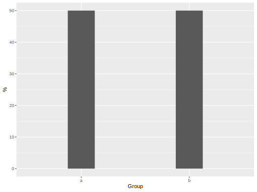

vignettes/introduction.Rmd
introduction.RmdTo begin, we can load up the tidyverse and this package. I’ll also create some data that will be useful for demonstration.
library(tidyverse) library(tidyext) set.seed(8675309) df1 <- tibble( g1 = factor(sample(1:2, 50, replace = TRUE), labels = c('a', 'b')), g2 = sample(1:4, 50, replace = TRUE), a = rnorm(50), b = rpois(50, 10), c = sample(letters, 50, replace = TRUE), d = sample(c(T, F), 50, replace = TRUE) ) df_miss = df1 df_miss[sample(1:nrow(df1), 10), sample(1:ncol(df1), 3)] = NA
We can start by getting a quick numerical summary for a single column. As the name suggests, this will only work with numeric data.
num_summary(mtcars$mpg)
# A tibble: 1 x 9
N Mean SD Min Q1 Median Q3 Max `% Missing`
<dbl> <dbl> <dbl> <dbl> <dbl> <dbl> <dbl> <dbl> <dbl>
1 32 20.1 6 10.4 15.4 19.2 22.8 33.9 0
num_summary(df_miss$a, extra = T)
# A tibble: 1 x 11
N Mean SD Min Q1 Median Q3 Max `% Missing` Distinct Zeros
<dbl> <dbl> <dbl> <dbl> <dbl> <dbl> <dbl> <dbl> <dbl> <dbl> <dbl>
1 40 0.1 1.1 -2.6 -0.9 0.2 0.7 2 20 40 0Note that the result’s class is a data.frame, which makes it easy to work with.
x = num_summary(mtcars$mpg) glimpse(x) Rows: 1 Columns: 9 $ N <dbl> 32 $ Mean <dbl> 20.1 $ SD <dbl> 6 $ Min <dbl> 10.4 $ Q1 <dbl> 15.4 $ Median <dbl> 19.2 $ Q3 <dbl> 22.8 $ Max <dbl> 33.9 $ `% Missing` <dbl> 0 mtcars %>% map_dfr(num_summary, .id = 'Variable') # A tibble: 11 x 10 Variable N Mean SD Min Q1 Median Q3 Max `% Missing` <chr> <dbl> <dbl> <dbl> <dbl> <dbl> <dbl> <dbl> <dbl> <dbl> 1 mpg 32 20.1 6 10.4 15.4 19.2 22.8 33.9 0 2 cyl 32 6.2 1.8 4 4 6 8 8 0 3 disp 32 231. 124. 71.1 121. 196. 326 472 0 4 hp 32 147. 68.6 52 96.5 123 180 335 0 5 drat 32 3.6 0.5 2.8 3.1 3.7 3.9 4.9 0 6 wt 32 3.2 1 1.5 2.6 3.3 3.6 5.4 0 7 qsec 32 17.8 1.8 14.5 16.9 17.7 18.9 22.9 0 8 vs 32 0.4 0.5 0 0 0 1 1 0 9 am 32 0.4 0.5 0 0 0 1 1 0 10 gear 32 3.7 0.7 3 3 4 4 5 0 11 carb 32 2.8 1.6 1 2 2 4 8 0
There are also functions for summarizing missingness.
sum_NA(df_miss$a) [1] 10 sum_blank(c(letters, '', ' ')) [1] 2 sum_NaN(c(1, NaN, 2)) [1] 1
When dealing with a data frame of mixed types we can use the describe_* functions.
describe_all(df1) $`Numeric Variables` # A tibble: 3 x 10 Variable N Mean SD Min Q1 Median Q3 Max `% Missing` <chr> <dbl> <dbl> <dbl> <dbl> <dbl> <dbl> <dbl> <dbl> <dbl> 1 g2 50 2.54 1.13 1 2 3 3.75 4 0 2 a 50 0 1 -2.6 -0.84 0.11 0.69 2.02 0 3 b 50 9.98 3.07 4 7.25 10 12 17 0 $`Categorical Variables` # A tibble: 29 x 4 Variable Group Frequency `%` <chr> <fct> <int> <dbl> 1 g1 a 25 50 2 g1 b 25 50 3 c n 5 10 4 c v 4 8 5 c e 3 6 6 c i 3 6 7 c j 3 6 8 c m 3 6 9 c r 3 6 10 c c 2 4 # … with 19 more rows describe_all_cat(df1) # A tibble: 29 x 4 Variable Group Frequency `%` <chr> <fct> <int> <dbl> 1 g1 a 25 50 2 g1 b 25 50 3 c n 5 10 4 c v 4 8 5 c e 3 6 6 c i 3 6 7 c j 3 6 8 c m 3 6 9 c r 3 6 10 c c 2 4 # … with 19 more rows describe_all_num(df1, digits = 1) # A tibble: 3 x 10 Variable N Mean SD Min Q1 Median Q3 Max `% Missing` <chr> <dbl> <dbl> <dbl> <dbl> <dbl> <dbl> <dbl> <dbl> <dbl> 1 g2 50 2.5 1.1 1 2 3 3.8 4 0 2 a 50 0 1 -2.6 -0.8 0.1 0.7 2 0 3 b 50 10 3.1 4 7.2 10 12 17 0
Note how the categorical data result is just as ready for visualization as the numeric, as it can be filtered by the Variable column. It also has an option to deal with NA and some other stuff.
describe_all_cat(df_miss, include_NAcat = TRUE, sort_by_freq = TRUE) %>% filter(Variable == 'g1') %>% ggplot(aes(x=Group, y=`%`)) + geom_col(width = .25)

Typically during data processing, we are performing grouped operations. As such there is a corresponding num_by and cat_by to provide the same information by some grouping variable. This basically is saving you from doing group_by %>% summarize() and creating variables for all these values. It can also take a set of variables to summarize using vars.
df_miss %>%
num_by(a, group_var = g2)
# A tibble: 5 x 11
# Groups: g2 [5]
g2 Variable N Mean SD Min Q1 Median Q3 Max `% Missing`
<int> <chr> <dbl> <dbl> <dbl> <dbl> <dbl> <dbl> <dbl> <dbl> <dbl>
1 2 a 11 0.1 1.1 -2.1 -0.5 0.2 0.6 2 0
2 3 a 11 -0.2 1.1 -2.6 -0.8 -0.2 0.4 1.7 0
3 NA a 0 NaN NA NA NA NA NA NA 100
4 1 a 10 0.1 1.1 -1.3 -0.9 0.4 1 1.6 0
5 4 a 8 0.4 1 -1.1 -0.2 0.6 1.1 1.5 0
df_miss %>%
num_by(vars(a, b), group_var = g2)
# A tibble: 10 x 11
# Groups: g2 [5]
g2 Variable N Mean SD Min Q1 Median Q3 Max `% Missing`
<int> <chr> <dbl> <dbl> <dbl> <dbl> <dbl> <dbl> <dbl> <dbl> <dbl>
1 2 a 11 0.1 1.1 -2.1 -0.5 0.2 0.6 2 0
2 2 b 11 9.9 2.5 6 8 10 12 14 0
3 3 a 11 -0.2 1.1 -2.6 -0.8 -0.2 0.4 1.7 0
4 3 b 11 9.9 3.1 5 7 10 12 14 0
5 NA a 0 NaN NA NA NA NA NA NA 100
6 NA b 10 8.7 3.9 4 5.5 8 11.8 15 0
7 1 a 10 0.1 1.1 -1.3 -0.9 0.4 1 1.6 0
8 1 b 10 11.6 2.6 8 10.2 11 12.8 17 0
9 4 a 8 0.4 1 -1.1 -0.2 0.6 1.1 1.5 0
10 4 b 8 9.8 3 6 8 8.5 12 15 0For categorical variables summarized by group, you can select whether the resulting percentage is irrespective of the grouping.
df1 %>%
cat_by(d,
group_var = g1,
perc_by_group = TRUE)
# A tibble: 4 x 5
# Groups: g1 [2]
g1 d N `% of Total` `% of g1`
<fct> <lgl> <int> <dbl> <dbl>
1 a FALSE 10 20 40
2 a TRUE 15 30 60
3 b FALSE 10 20 40
4 b TRUE 15 30 60
df1 %>%
cat_by(d,
group_var = g1,
perc_by_group = FALSE,
sort_by_group = FALSE)
# A tibble: 4 x 4
g1 d N `% of Total`
<fct> <lgl> <int> <dbl>
1 a FALSE 10 20
2 a TRUE 15 30
3 b FALSE 10 20
4 b TRUE 15 30In addition there are some functions for data processing. We can start with the simple one-hot encoding function.
onehot(iris) %>%
slice(c(1:2, 51:52, 101:102))
Sepal.Length Sepal.Width Petal.Length Petal.Width Species_setosa Species_versicolor Species_virginica
1 5.1 3.5 1.4 0.2 1 0 0
2 4.9 3.0 1.4 0.2 1 0 0
51 7.0 3.2 4.7 1.4 0 1 0
52 6.4 3.2 4.5 1.5 0 1 0
101 6.3 3.3 6.0 2.5 0 0 1
102 5.8 2.7 5.1 1.9 0 0 1It can do it sparsely.
iris %>% slice(c(1:2, 51:52, 101:102)) %>% onehot(sparse = TRUE) 6 x 3 sparse Matrix of class "dgCMatrix" Species_xsetosa Species_xversicolor Species_xvirginica 1 1 . . 2 1 . . 3 . 1 . 4 . 1 . 5 . . 1 6 . . 1
Choose a specific variable, whether you want to keep the others, and how to deal with NA.
df_miss %>%
onehot(var = c('g1', 'g2'), nas = 'na.omit', keep.original = FALSE) %>%
head()
a b c d g1_a g1_b g2_1 g2_2 g2_3 g2_4
1 0.1348980 12 o FALSE 0 1 0 1 0 0
2 0.1175821 5 r TRUE 1 0 0 0 1 0
3 -0.8255891 14 p FALSE 0 1 0 1 0 0
4 -2.1352363 7 l FALSE 1 0 0 1 0 0
5 0.2142085 10 n TRUE 0 1 0 1 0 0
6 -0.9470681 11 s FALSE 1 0 0 0 1 0With create_prediction_data, we can quickly create data for use with predict after a model. By default it will put numeric variables at their mean, and categorical variables at their most common category.
create_prediction_data(iris) Sepal.Length Sepal.Width Petal.Length Petal.Width Species 1 5.843333 3.057333 3.758 1.199333 setosa create_prediction_data(iris, num = function(x) quantile(x, p=.25)) Sepal.Length Sepal.Width Petal.Length Petal.Width Species 1 5.1 2.8 1.6 0.3 setosa
We can also supply specific values.
cd = data.frame(cyl=4, hp=100) create_prediction_data(mtcars, conditional_data = cd) cyl hp mpg disp drat wt qsec vs am gear carb 1 4 100 20.09062 230.7219 3.596563 3.21725 17.84875 0.4375 0.40625 3.6875 2.8125
For modeling purposes, we often want to center or scale the data, take logs etc. The pre_process function will standardize numeric data by default.
pre_process(df1) # A tibble: 50 x 6 g1 g2 a b c d <fct> <dbl> <dbl> <dbl> <chr> <lgl> 1 b -0.478 0.133 0.659 o FALSE 2 a 0.408 0.116 -1.62 r TRUE 3 b -0.478 -0.828 1.31 p FALSE 4 a -0.478 -2.14 -0.972 l FALSE 5 b -0.478 0.212 0.00652 n TRUE 6 a 0.408 -0.949 0.333 s FALSE 7 a 0.408 -0.654 -0.972 i FALSE 8 a -0.478 0.727 -0.972 n FALSE 9 b -1.36 1.05 -1.95 s TRUE 10 a 0.408 0.100 -1.95 j TRUE # … with 40 more rows
Other options are to simply center the data (scale_by = 0), start some variables at zero (e.g. time indicators), log some variables (with chosen base), and scale some to range from zero to one.
pre_process(mtcars,
scale_by = 0,
log_vars = vars(mpg, wt),
zero_start = vars(cyl),
zero_one = vars(hp, starts_with('d'))) %>%
describe_all_num()
# A tibble: 11 x 10
Variable N Mean SD Min Q1 Median Q3 Max `% Missing`
<chr> <dbl> <dbl> <dbl> <dbl> <dbl> <dbl> <dbl> <dbl> <dbl>
1 mpg 32 2.96 0.3 2.34 2.74 2.95 3.13 3.52 0
2 cyl 32 2.19 1.79 0 0 2 4 4 0
3 disp 32 0.4 0.31 0 0.12 0.31 0.64 1 0
4 hp 32 0.33 0.24 0 0.16 0.25 0.45 1 0
5 drat 32 0.39 0.25 0 0.15 0.43 0.53 1 0
6 wt 32 1.12 0.32 0.41 0.95 1.2 1.28 1.69 0
7 qsec 32 0 1.79 -3.35 -0.96 -0.14 1.05 5.05 0
8 vs 32 0 0.5 -0.44 -0.44 -0.44 0.56 0.56 0
9 am 32 0 0.5 -0.41 -0.41 -0.41 0.59 0.59 0
10 gear 32 0 0.74 -0.69 -0.69 0.31 0.31 1.31 0
11 carb 32 0 1.62 -1.81 -0.81 -0.81 1.19 5.19 0Note that center/standardizing is done to any numeric variables not chosen for log, zero_start, and zero_one.
Here’s a specific function you will probably never need, but will be glad to have if you do. Some data columns have multiple entries for each observation/cell. While it’s understandable why someone would do this, it’s not very good practice. This will split out the entries, or any particular combination of them, into their own indicator column.
d = data.frame(id = 1:4, labs = c('A-B', 'B-C-D-E', 'A-E', 'D-E'))
combn_2_col(
data = d,
var = 'labs',
max_m = 2,
sep = '-',
collapse = ':',
toInteger = T
)
id labs combo A B A:B C D E B:C B:D B:E C:D C:E D:E A:E
1 1 A-B A, B, A:B 1 1 1 0 0 0 0 0 0 0 0 0 0
2 2 B-C-D-E B, C, D, E, B:C, B:D, B:E, C:D, C:E, D:E, B:C, B:D, B:E, C:D, C:E, D:E, B:C, B:D, B:E, C:D, C:E, D:E 0 1 0 1 1 1 1 1 1 1 1 1 0
3 3 A-E A, E, A:E 1 0 0 0 0 1 0 0 0 0 0 0 1
4 4 D-E D, E, D:E 0 0 0 0 1 1 0 0 0 0 0 1 0
combn_2_col(
data = d,
var = 'labs',
max_m = 2,
sparse = T
)
4 x 13 sparse Matrix of class "dgCMatrix"
[[ suppressing 13 column names 'A', 'B', 'A_B' ... ]]
1 1 1 1 . . . . . . . . . .
2 . 1 . 1 1 1 1 1 1 1 1 1 .
3 1 . . . . 1 . . . . . . 1
4 . . . . 1 1 . . . . . 1 .Oftentimes I need to create a column that represents the total scores or means of just a few columns. This is a slight annoyance in the tidyverse, and there isn’t much support behind the dplyr:rowwise function. As such, tidyext has a couple simple wrappers for row_sums, row_means, and row_apply.
d = data.frame(x = 1:3,
y = 4:6,
z = 7:9,
q = NA)
d %>%
row_sums(x:y)
x y z q sum
1 1 4 7 NA 5
2 2 5 8 NA 7
3 3 6 9 NA 9
d %>%
row_means(matches('x|z'))
x y z q mean
1 1 4 7 NA 4
2 2 5 8 NA 5
3 3 6 9 NA 6
row_apply(
d ,
x:z,
.fun = function(x)
apply(x, 1, paste, collapse = '')
)
x y z q var
1 1 4 7 NA 147
2 2 5 8 NA 258
3 3 6 9 NA 369